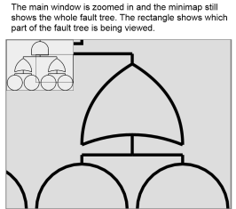
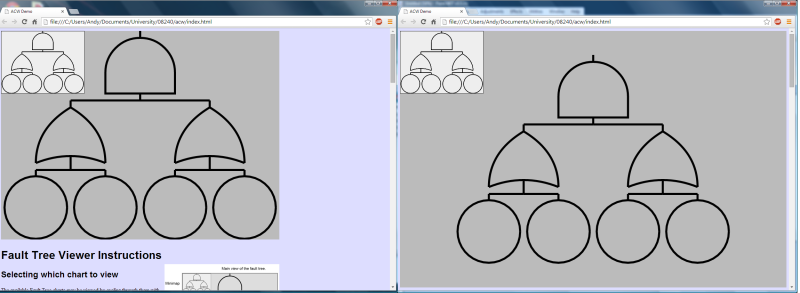

| X | y | prevX | prevY | offsetX | offsetY |
| World X | World Y | Zoom Scale | Resize Window |
The available Fault Tree charts may be viewed by cycling through them with the left and right arrow keys. When you reach the last available fault tree the the application will automatically cycle back to the first. The Fault Tree will automatically scale to fill the main viewer window when selected. The minimap viewer will always show the whole fault tree.
You can use the mouse wheel (if you have one) to zoom in and out of the main window. The image will zoom into the position where the mouse pointer is. This is especially useful for the larger fault trees which appear very small when their whole is fit to the available viewer size. When you zoom in you will find that the minimap viewer continues to show the whole fault tree. In addition a rectangle will indicate which area of the fault tree you are currently viewing.
Please note that the mouse wheel will no longer control the scrolling of the webpage - you may use the up and down arrow keys for this if you wish.
At any level of zoom you may press the S key to make the currently selected Faul Tree to fit into the available viewing size.
In addition you may press the 1 key at any zoom level which will automatically zoom to a level which makes viewing the individual nodes comfortable. This is especially useful to quickly zoom into the larger fault trees.
When zoomed in to a fault tree it is possible to move around the area currently being viewed by holding the left mouse button down and moving the mouse around. The main view will then change as the mouse is moved. You will observe that the rectangle in the minimap will also move to reflect the area being viewwed as part of the whole tree. Release the mouse button to stop moving the view.
By default the main viewing window is 800 pixels wide by 600 pixels high. If you have a large monitor with a higher resolution you can resize the main viewing window to fit the browser window by pressing the R key. The main viewing window will automatically resize to match the browser window size if you change the size of your browser window.
If you wish to return the main viewer window to its default size then you should press the F key. The viewing window will return to its 800 x 600 size. This effect may be seen in the image below where the left picture shows the viewer at it's default 800 x 600 size, while the one on the right shows the viewer taking up all of the spzce in the browser window.
By default the minimap appears in the top left corner. You may change the corner in which it appears by using the 1, 3, 7, and 9 keys on the numeric keypad. These will move the minimap to the appropriate corner. Note that you must have Num Lock on for this to work. If you resize the viewing window then the minimap returns to the top left corner.
These instructions may be hidden by pressing the I key. Pressing I again will show the instructions once more.
By pressing the T key it is possible to display some basic application information such as the zoom level and whether or not the viewing window resize mode is enabled or not. Pressing T again will hise this information. Please note that in window resize mode the viewing window will expand to hide this information. Some space at the bottom can be made by pressing the B key.
The nodes were drawn using a mixture of built in canvas functions and custom written routines. The And gate uses built in routines exclusively while the Basic event and Transfer gate use a segement routine from the FaultTreeNode object. The Or gate additionally makes use of a bezier curve object which stores the set of points calulated for the curve in an array. The Or gate draw function can then iterate through the points and draw the necessary lines. The Or gate also makes use of the built in Bezier Curve for completeness.
This was one of the more complex parts of the development and required a few iterations to get right. The spacing out of the nodes was the most complex part as they did not take a position vector when created and so had to be positioned by using translates. Initial experiments based on working out the full width of the tree (by using a recursive function which required the Basic event and transfer gate to return their actual width) and then dividing this up between child nodes showed some promise but proved unpredictable with larger fault trees, especially ones which were very imbalanced. An additional workshop demonstrated a particular algorithm which could be followed and this was implemented. It also made use of the tree's total width and this made implementation easier. The key difference was a translation to the right allowing for the width of the node's siblings which had already been drawn.
As explained above translate and scale were used to position all objects. Save and restore were carefully matched.
Basic zoom functionality was achieved by adding an event listener for the mouse wheel and adjusting the variable by which the whole canvas was scaled. This zoom was centred on the origin and required frequent panning (see below) to zoom onto a particular point. Additional zoom to mouse pointer functionality was provided by calculating the position of the mouse pointer in terms of the the fault tree (the world position) rather than the window or canvas. This was achieved by getting the mouse position in the window, allowing for the distance between the browser window and the canvas, the fact that the canvas origin had been translated and the current offset owing to the panning. This then had to be adjusted according to the current zoom scale. To check this was working correctly a grid of hundred by hundred sqaures was drawn on the canvas and the current wolrd position displayed on the HTML page (presss T to show this test data). Then when zooming in or out the current offset was altered by the world mouse position multipied by the amount the zoom changes (or increments) with each movement of the mouse wheel. The final addtion to thhis was a clamp which prevented negative scales being applied which result in inversion of the fault tree.
The panning was implemeneted by adding an event listener to listen for mouse down and mouse up events. These detect clicks of the left mouse button. When the mouse button went down a boolean value is set to true so that, when a mouse move event is detected, the canvas can be moved an amount related to that detected. When the mouse up event is detected, the boolean is set to false and any mouse movement is no longer applied to canvas movement. In the draw function the amount to move is applied as a translate function.
Already knowing the width (see above) another function was written to calculate the depth of recursion and then change this into the height of the fault tree. This was then used to calculate two possible scaling factors. The appropriate one is then chosen to ensure the full fault tree is displayed in the available canvas. (Both cannot be used as, although this results in maximum use of the canvas space, the fault tree is stretched or squashed). This scale can then be applied in the draw function.A vertical offset also has to calculated to ensure the tree is centralised vertically. Horizontal offset seems to be zero as the trees are drawn with a vertical line of symmetry running through the centre of the top node. (I believe this is owing to the algorithm used to space out the nodes). Finally a key down event handler was added to detct a press of the S key to trigger the scale to fit function.
Knowing the scale needed to fit the tree to the available canvas space, this scale can be stored and set as a target without immeadiately changing the current scale. Logic can then be added to update functions which work out whether the scale needs to be increased or decreased and then applying an increment or decrement. A similar operation is then donw for the verical and horizontal offset. A twist was added here to make the increment towards the target offset related to the amount remaining. Specifically one twelfth was used. This results in a fairly pleasing movement.
Key down event handlers were added for the left and right arrow keys to cycle through the array containing the example fault trees.
This was implemented using the drawImage function to draw the fault tree, which is always fitted to the minimap canvas, onto a separate minimap canvas. This is created as a new document element but never added to the DOM. The rectangle showing which part of the tree is being viewed when zoomed is scaled in the opposite way to the main canvas view. I.e. as we zoom in the rectangle gets smaller.
Vectors and their associated functions developed previously were used extensively throughout the code. An addtion function which returns a string of the vector in the form (x,y) was added for loggin the vector object to the console in an easy to read way. This proved valuable in testing and debugging.
Code is indented to make it readable. Existing objects were used and a new Bezier object added.Variable and function names were meaningful, although many had to be refactored to avoid confusion/similarity. Comments are helpful and help explain what is going on, in addition to helping with thinking throough problems.
SVN was used extensively and was useful when backtracking or exploring new possibilities.